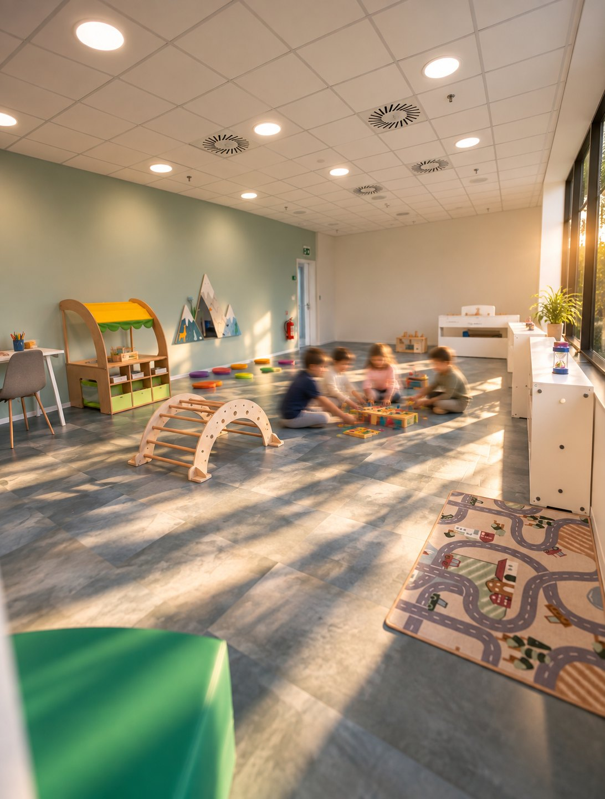
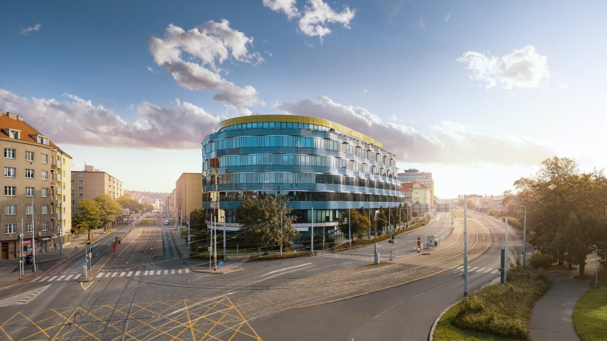
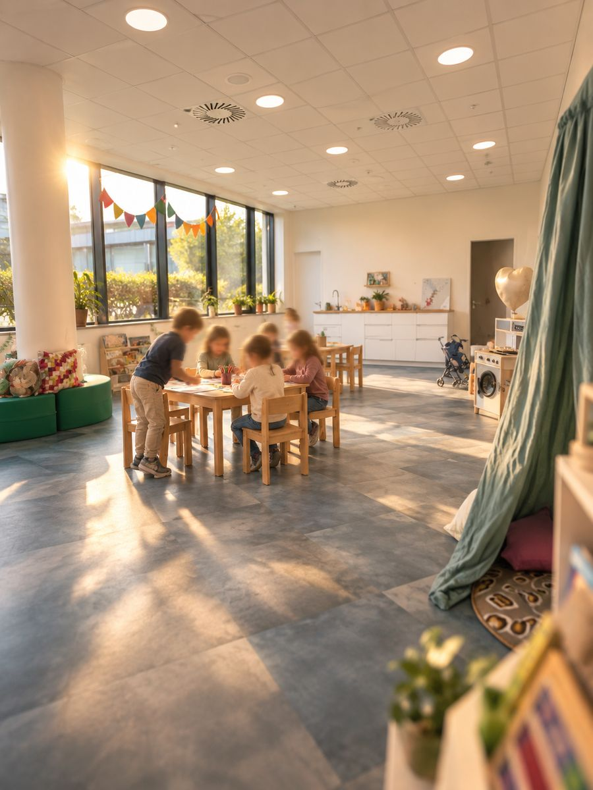

Experience Morning
každý čtvrtek · 8:30 — 10:30
Přijďte s dítětem a zažijte skutečné dopoledne v Little FLOW. Komunitní kruh, pohyb, společná aktivita i čas na objevování.
Školka kousek od vás
Tramvají na Balabenku · Odkud přesně →
Little FLOW je mateřská škola pro děti od 2 do 6 let na pražské Balabence — pro rodiny z Libně, Vysočan, Karlína, Žižkova i Holešovic. V malé skupině vytváříme prostředí, ve kterém mohou děti objevovat, tvořit, zkoumat a učit se v souvislostech.

každý čtvrtek · 8:30 — 10:30
Přijďte s dítětem a zažijte skutečné dopoledne v Little FLOW. Komunitní kruh, pohyb, společná aktivita i čas na objevování.
každé pondělí · 10:00 — 11:30
Chcete se nejdřív v klidu zeptat na školku, náš přístup, adaptaci nebo pokračování do ZŠ FLOW?
Tramvaj staví minutu od našich dveří. Najděte svou čtvrť.
Jízdní doby tramvaje na zastávku Balabenka ve všední den ráno, podle jízdního řádu PID.
Šest principů, na kterých stavíme každodenní život ve školce.
Děti se učí skrze témata a projekty, které propojují více oblastí najednou — jazyk, pohyb, tvoření, logické myšlení i spolupráci. Například téma „Naše město“ může vést od procházky po okolí přes stavbu modelu čtvrti až po společnou prezentaci pro rodiče.
Čeština i angličtina jsou přirozenou součástí každého dne. Děti se s angličtinou setkávají při hrách, písních, běžné komunikaci i společných činnostech.
K technologiím vedeme děti hmatatelně — stavěním, zkoumáním a hrou, ne přes obrazovku. Žádné tablety, žádná pasivní konzumace.
Díky malé skupině máme prostor každé dítě opravdu poznat, vnímat jeho tempo, potřeby a zájmy a dát mu dostatek pozornosti.
Little FLOW přirozeně navazuje na prostředí a filozofii ZŠ FLOW. Společné akce, návštěvy školy a známé prostředí mohou dětem usnadnit přechod do 1. třídy. Jak propojujeme školku a školu →
Rodiče vnímáme jako partnery. Průběžně sledujeme vývoj dítěte, zachycujeme jeho pokroky v portfoliu a pravidelně sdílíme, v čem se posouvá a na co se chceme dál zaměřit — přes aplikaci Twigsee i osobně.
Angličtina v Little FLOW není předmět ani kroužek. Je přirozenou součástí dne a děti se s ní setkávají v situacích, které dávají smysl.
Angličtina se objevuje tam, kde dává smysl — při hře, společném projektu, tvoření, pohybu nebo běžném rozhovoru. Dítě tak jazyk nevnímá jako „učení", ale jako přirozenou součást dne.
Nikdo nikoho nenutí odpovídat anglicky. Děti nejdřív rozumí, pak začnou samy. Tiché období je normální část procesu, ne problém.
Little FLOW vytváří prostředí, ve kterém se přirozeně potkává čeština s angličtinou. České děti získávají pravidelný kontakt s angličtinou a děti z mezinárodních rodin mají možnost postupně poznávat češtinu v každodenních situacích. Oba jazyky používáme přirozeně, v kontextu a s respektem k tempu každého dítěte.
Little FLOW stojí na vztazích. Děti provází malý stabilní tým, který je zná, naslouchá jim a podporuje je v jejich vlastním tempu.
Poznáte je osobně na Experience Morningu — proto ho děláme.
Každý den má svůj rytmus, ale není stejný. Rutiny dětem dávají bezpečí, zatímco projekty, pohyb, objevování a vlastní volba přinášejí nové zkušenosti.
Příchod, volná hra, komunitní kruh, pohyb a svačina.
Projektové, tvořivé nebo badatelské činnosti a každodenní pobyt venku.
Oběd, možnost odchodu po obědě, odpočinek podle potřeb dítěte a svačina.
Volná hra, tvoření, pohyb, centra aktivit, pobyt venku a dokončování rozpracovaných činností.
Denní rytmus dětem dává jistotu, ale nechává dost prostoru pro vlastní tempo, spontánní hru a objevování.
Rodiny, které do Little FLOW nastupují teď, mají Founding Family Rate — naše poděkování těm, kdo školku budují s námi.
K dispozici i varianty na 4 a 3 dny v týdnu. Sourozenecká sleva 10 %. Sazba platí pro rodiny, které nastoupí do 31. 1. 2027.

Little FLOW je mateřská škola Základní školy FLOW — Founders’ School. Sdílíme kampus na Balabence i přístup k učení.
Společné akce, portfolio, návštěvy tříd. Děti znají budoucí učitele a prostory dávno před nástupem do 1. třídy — přechod do první třídy pro ně není skok do neznáma.
Little FLOW je součástí ZŠ FLOW. Tohle říkají rodiče, jejichž děti už chodí do základní školy o patro výš.
Chtěla jsem pro syna školu, do které se bude těšit a učení ho bude bavit. Nejenže se těší, ale často se mu ani nechce z ní domů, protože i družina je super.
Naše dcera přestoupila ze státní školy do FLOW a rozdíl je nepřehlédnutelný. Každé ráno jde do školy s velkým nadšením a chválí všechny učitele.
Odpovědi na rovinu, ještě než se k nám přijdete podívat.
Každý den na hřiště Balabenka — 3 minuty pěšky od budovy. Budova má navíc vlastní venkovní terasu, kterou využíváme na hraní i na činnosti.
Ano. Děti s plenkami bereme a s odvykáním pomáháme — vlastním tempem dítěte a v domluvě s vámi.
Ano. Vybíráte si 3, 4 nebo 5 dní v týdnu a k tomu celý nebo zkrácený den. Kombinace je na vás.
Žádný nacvičený den otevřených dveří. Dvě cesty, jak Little FLOW poznat — s dítětem, nebo sami u kávy.
Vaše dítě se zapojí do skupiny a projde si běžné ráno v Little FLOW — projektový blok, rituály, učitelky. Uvidíte, jak pracujeme, místo abyste o tom jen slyšeli.
Nespěchaný rozhovor s vedením školky — program, přijímání, adaptace, školné. Pro rodiče, kteří chtějí detaily dřív, než přivedou dítě.
Setkáte se s Kristýna Šonská, ředitelka
Napište nám a domluvíme termín — Experience Morning s dítětem, nebo kávu jen pro vás. Ozveme se do 1 pracovního dne.

Founding Family Rate · do 31. 1. 2027
Naše poděkování rodinám, které Little FLOW budují s námi od začátku.
Ceny jsou měsíční a včetně stravování. Platí pro rodiny, které nastoupí do 31. 1. 2027.
Varianty na 3 a 4 dny v týdnu i sourozeneckou slevu najdete ve školném.